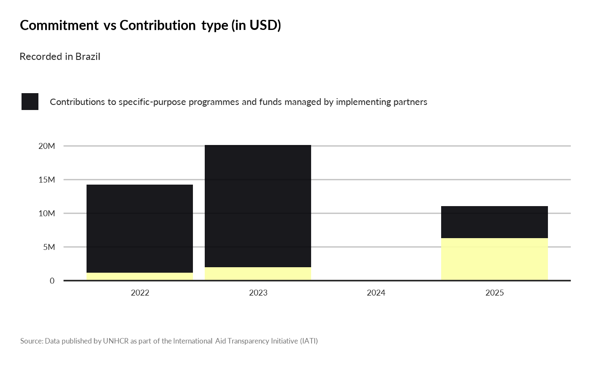
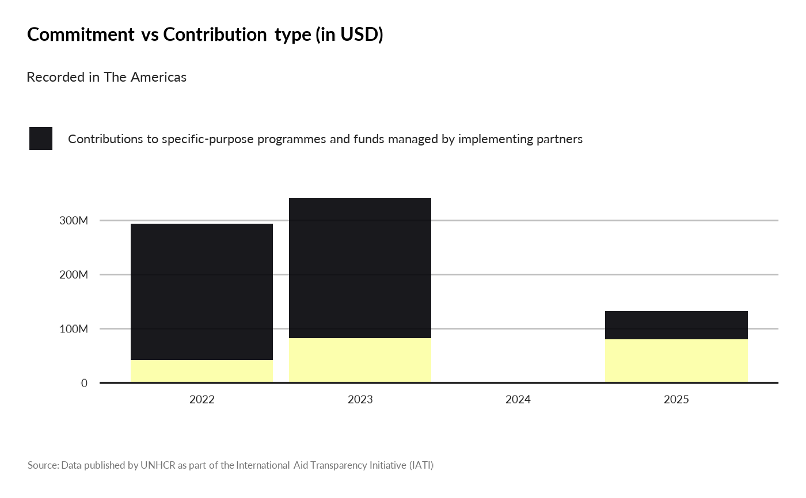

What’s the breakdown by contribution Type (Un-earmarked, Tightly earmarked, etc.) from Donor Funds by Year?
Arguments
- year
A numeric value or a vector of numeric value to filter on year. Note that data pre-2022 are using a different set of indicators
- programme_lab
A character vector corresponding to the name of the programme.
- iati_identifier_ops
A character vector corresponding to the name of the operation.
- ctr_name
A character vector corresponding to the name of the country.
Examples
knitr::kable(iati::dataTransaction |>
dplyr::select(aid_type1_name, aid_type1_description) |>
dplyr::distinct() |>
dplyr::filter(!(is.na(aid_type1_name))))
#>
#>
#> |aid_type1_name |aid_type1_description |
#> |:---------------------------------------------------------------------------------------|:--------------------------------------------------------------------------------------------------------------------------------------------------------------------------------------------------------------------------------------------------------------------------------------------------------------------------------------------------------------------------------------------------------------------------------------------------------------------------------------------------------------------------------------------------------------------------------------------------------------------------------------------------------------------------------------------------------------------------------------------------------------------------------------------------------------------------------------------------------------------------------------------------------------------------------------------------------------------------------------------------------------------------------------------------------------------------------------------------------------------------------------------------------------------------------------------------------------------------------------------------------------------------------------------------------------------------------------------------------------------------------------------------------------------------------------------------------------------------------------------------------------------------------------------------------------------------------------------|
#> |Contributions to specific-purpose programmes and funds managed by implementing partners |In addition to their core-funded operations, international organisations, NGOs, PPPs and networks, both in provider and in third countries, set up programmes and funds with a specific sectoral, thematic or geographical focus. Donors’ bilateral contributions to such programmes and funds are recorded here. |
#> |Core contributions to multilateral institutions |These funds are classified as multilateral ODA (all other categories fall under bilateral ODA). The recipient multilateral institution pools contributions so that they lose their identity and become an integral part of its financial assets. See Annex 2 of the DAC Directives for a comprehensive list of agencies core contributions to which may be reported under B02 (Section I. Multilateral institutions). |
#> |Project-type interventions |A project is a set of inputs, activities and outputs, agreed with the partner country*, to reach specific objectives/outcomes within a defined time frame, with a defined budget and a defined geographical area. Projects can vary significantly in terms of objectives, complexity, amounts involved and duration. There are smaller projects that might involve modest financial resources and last only a few months, whereas large projects might involve more significant amounts, entail successive phases and last for many years. A large project with a number of different components is sometimes referred to as a programme, but should nevertheless be recorded here. Feasibility studies, appraisals and evaluations are included (whether designed as part of projects/programmes or dedicated funding arrangements). Academic studies, research and development, trainings, scholarships, and other technical assistance activities not directly linked to development projects/programmes should instead be recorded under D02. Aid channelled through NGOs or multilaterals is also recorded here. This includes payments for NGOs and multilaterals to implement donors’ projects and programmes, and funding of specified NGOs projects. By contrast, core funding of NGOs and multilaterals as well as contributions to specific-purpose funds are recorded under B.* In the cases of equity investments, humanitarian aid or aid channelled through NGOs, projects are recorded here even if there was no direct agreement between the donor and the partner country. |
show_contributions(year = c(2022, 2023, 20024, 2025),
ctr_name = "Brazil")

show_contributions(year = c(2022, 2023, 20024, 2025),
programme_lab = "The Americas")
